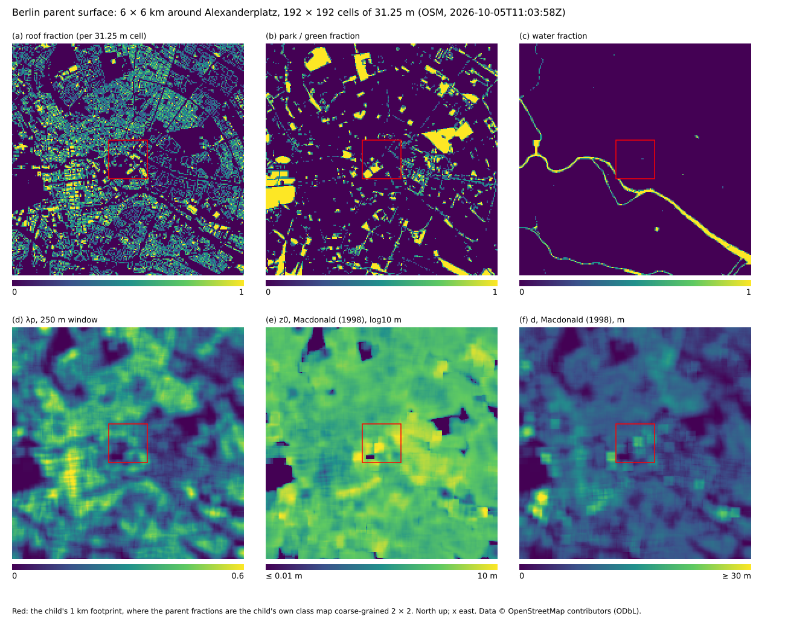

The Berlin case: surface exchange and radiation
Surface exchange (#129)
components/urban/surface_exchange.jl (slot :surface_exchange, provider :most) and components/urban/ground_soil.jl (slot :ground, provider :soil_column) replaced the slab scheme of #126 (surface_slab.jl, soil_urban.jl).
- One surface per column. Every column with air above it has an
AbstractSurface: aSoilColumn.SoilThermalColumnwith hydrology for streets, building-adjacent cells and the park (fromground_soil's factory), aRadiation.SlabLandfor roofs, glass and water (β = 1) until #139 / #144 / #141 register their own. Albedo and emissivity come frombus.params(the radiosity materials), so the radiation and the surface balance agree. - Roof-aware air level. The forcing is the first non-solid cell of the column (
bus.k_air),z_ref = Δz/2above the surface; the air temperature isθ Π̄_kand the pressurep̄_kof the reference state (#131; roofs sit up to 190 m up). H goes into θ, E into qv of that cell only: the smoke check counts writes into solid cells (0 in every run), and the formertest/berlin_surface_exchange.jl(removed in #320) checked that the stage changes nothing else, and that $Σρc_pΔzΔθ = ΣHΔt$ (2e-11). - Cadence. The surfaces are stepped every
cfg.cadence[:soil]seconds (30 s in the flagship, 4 s in:smoke; a:surfacekey overrides it) and their fluxes are held as tendencies until the next surface step, so the air receives exactly what the surface gave. - Momentum. The ground is a wall of
Aeolus.WallModels(#169): every surface step hands each column aMOSTWallLawwith itsz0mand the Obukhov length of that step (matching_obukhov_length, theLfor which the law gives back the step's $u_*$), and every stepapply_wall_stress!evaluates it at the instantaneous first-air-cell wind and applies the stress as an implicit drag on the first-air-cell velocity faces (over thek_airlevel mask, after the IBM);bus.u_staris that step's $u_τ$. The momentum removed equals $Σ τ_w(U)\,\mathbf{u}/U\,Δt$ to $O(aΔt)$ (1e-4 in the test). WithLand the wind frozen the operator reproduced the drag of #129 ($u_*^2/U$ held between surface steps) exactly (0.0 relative difference). Optionwall_formulationselects the local form (default), Schumann's or Moeng's plane-mean form (smoke variants). In:smoke(surfaces every 4 s) per-step evaluation changes the ground mean $u_*$ after 1 h from 0.05647 to 0.05644 m s⁻¹ and the street wind from 0.47784 to 0.47796 m s⁻¹; the operator costs 1.2 ms per call on the 64 × 64 flagship plane. The:wallground used to be free-slip. It stays a free-slip:wallcarrying the wall-model drag, not a resolvedNoSlipWall(#172): at Δx = 15.6 m a resolved no-slip wall would be unphysical (Transition and wall-bounded flow). - Wall-model input (P57-b, #183). The wind the ground law is evaluated at is passed through the exponential time filter of Yang, Park & Moin (2017) (
WallModels.MatchingInput), on by default withinput_T_f = 10 sand advanced once per accepted step in:surface_update; the stress keeps the direction of the instantaneous first-cell wind. The matching height stays at the first air cell (h_wm_cells = 1): three cells above a street (18.75 m) lie in or above the canyon, where no log law holds.h_wm_cells = 3samples the third air cell of the park and water columns (h_wm_classes) — a smoke variant. The smoke checks requirebus.u_starto be the wall law at the step's wind and matching height (1e-12), the matching cells to be air and the filter state to be finite. Measured in:smoke(1 h, last 30 min): street $τ_w$ 7.77e-3 vs 7.61e-3 m² s⁻² without the filter, temporal RMS 1.054e-3 vs 1.029e-3, sub-60 s RMS 2.24e-6 vs 2.18e-6 (the smoke flow has almost no fast fluctuation to filter); ground $u_*$ 0.05260 vs 0.05225 m s⁻¹. - Non-equilibrium ground (P57-c, #189).
wall_model = :nonequilibrium(default:equilibrium) makes the ground stress that of aWallModels.TBLEWallModel: the thin-boundary-layer equations on a 30-point column under every ground and roof column (rough, the surface'sz0m), between the surface and the same filtered matching wind, with the resolved pressure gradient at the first air level (one-sided next to a building) andtble_terms(default:pressure_gradient). Applied by the sameapply_wall_stress!face loop in:post_predictor, advanced once per step in:surface_update;bus.u_staris the columns' $u_τ$; the surface heat and moisture fluxes stay MOST. Neutral (no stability correction in the TBLE). A smoke variant runs it, with checks that every surface column has a finite TBLE column with its surface's roughness and thatbus.u_staris $|τ_w|^{1/2}$ of the columns. Flagship (64 × 64 × 32, 100 steps after 300): +15.6 ms per step in the coupling's stages (9.4 %; not proposed as default), and on the street columns the TBLE and equilibrium stresses differ in sign on 11.1 % and in sign or by > 30 % on 77.3 %: the canyon pressure gradient (median 3.3e-3 m s⁻²) times the 3.1 m matching height is as large as the stress. - Dynamic roughness (P57-e, #190; option
z0m = :dynamic, a smoke variant, off by default). The ground law's $z_{0m}$ becomesWallModels.DynamicRoughness, $\sqrt{z_{0,f}^2 + α^2σ_Δ^2}$: $σ_Δ$ is the RMS of the OSM building heights (osm_height_map,dynamic_refine = 4times finer, true heights) about the IBM staircase, $z_{0,f}$ is the column's table value (still the roughness of the surface-layer solve), and α is solved every surface step from the first-air wind. The smoke checks require the law's $z_0$ to equal the model's (1e-12), and it must be finite, at least the table value and below the matching height. Measured in:smokeover 30 min:- street $z_0$ 0.0555 m against 0.05 m (range 0.05-0.37 m);
- street $u_*$ +1.5 %, ground $u_*$ +5.7 %;
- cost 1.1 ms per surface step.
- Extra surface energy.
bus.sensible(window sun, glazing transmission, dew heat) is collected every step and delivered to the surfaces asQ_extraat their next step (step_surface!ofSlabLandandSoilThermalColumntake it since #129). The ledger books the pending energy in $ΔS$, so the per-class closure stays at round-off (≤ 3.1e-11 W m⁻² in 1 h of the flagship, wall class at noon). - Dew. One vapour exchange per surface: the soil and water surfaces take up dew as negative evaporation (into the soil water); the RadiationFog dew reservoir of
fog_dewacts only over surfaces with β = 0 (roofs, glass), above the roof. - No clamps. H, LE and Ts are not clipped (the Kessler qv clamp stays for #143).
- Maximum sustainable heat flux (P58-e, #193). Every surface step also evaluates each column's MSHF (Van de Wiel et al. 2012;
SurfaceExchange.surface_mshf_ratio): one maximisation of the Monin–Obukhov flux curve at the column's wind $\max(U, U_{min})$,z_ref,z0mand $θ_{va}$. It storesH_max(W m⁻², outputH_max_sfc) and the ratio of the downward buoyancy flux to it (mshf_ratio, negative where unstable). The report prints the mean ratio over the stable street, roof and park columns and the share of them beyond the MSHF point ($z_{ref}/L$ past the peak of the flux curve, outputmshf_beyond). The smoke check asserts ratio ≤ 1 + 1e-8 for every column on the MOST fluxes of the step's start. The fluxes a soil column returns are linearised in $T_{skin}$ and may overshoot by O(ΔT²): measured ≤ 3.1 % in the smoke run, checked < 10 %. Over the 21 h flagship the delivered ratio reaches- This happens on calm soil columns where $H_{max}$ is below
Measured (flagship, 64 × 64 × 32, adaptive step, 1 h)
Remeasured on master (915bd49, with the reference state of #131, the halo fix of #132 and the adaptive stepper, the default since #166). Two 1 h runs, from 06:00 and from 12:00 local on 20 June (CaseConfig(:alexanderplatz; nsteps = 1800, start_h = 6 or 12), default couplings), each run to 3600 s of simulated time: 1648 steps of 1.45–3.36 s (mean 2.18 s) from 06:00 and 2157 steps of 0.76–3.23 s (mean 1.67 s) from 12:00. The bus fields are averaged over simulated time, each step weighted by its dt, over each interval. "Slab H" is the same run on the #127 branch (slab scheme), kept from the #129 measurement. Domain means over 4096 columns (the two columns without a surface count as zero), W m⁻²; "street+wall" is the mean over the 1690 street and 978 wall-adjacent columns, "roof" over the 873 roof columns, u* (m/s) over street and roof columns:
| interval | slab H | MOST H | MOST LE | MOST H street+wall | MOST H roof | u* street | u* roof |
|---|---|---|---|---|---|---|---|
| 06:00–06:05 | −24.1 | −0.4 | 0.3 | −0.5 | −0.1 | 0.011 | 0.002 |
| 06:45–07:00 | −15.9 | 16.5 | 42.9 | 25.2 | −0.0 | 0.066 | 0.0007 |
| 12:00–12:05 | −23.7 | 4.5 | 22.1 | 7.0 | −0.1 | 0.063 | 0.002 |
| 12:45–13:00 | −8.7 | 74.1 | 13.4 | 111.9 | 3.0 | 0.107 | 0.027 |
The street columns alone give H = −0.7, 35.6, 11.2 and 168.4 W m⁻² in the same four intervals. (The scripts of the #129 measurement no longer exist; the class averages are reconstructed from their column labels. Before #131, with T_air = θ − Γ_d z, an 8 km scale-height pressure and ρ = 1, the MOST columns read 22.7 / 46.2 / 34.5 at 06:45–07:00 and 86.5 / 15.2 / 127.9 / 10.5 at 12:45–13:00.)
Why H differs: the slab scheme exchanged at a fixed C_h = 1e-3 and U = 3 m/s, i.e. 3.0 W m⁻² K⁻¹ whatever the flow, from a slab that starts 8 K colder than the air (Ts0 = 285 K under θ = 293 K), so its H was about −24 W m⁻² at the start and still negative after an hour at noon. With Monin–Obukhov and the resolved wind at the first air cell (0.48 m/s over streets, 0.20 m/s over roofs at 07:00) the cold, stably stratified start is almost decoupled (H ≈ 0), and the soil columns' massless skins heat within minutes, so the streets turn unstable: after half an hour street+wall H is 25 W m⁻² in the morning and 112 W m⁻² at noon (street columns alone 36–168). The cold-started roof slabs (C_s = 1.8e5 J m⁻² K⁻¹) stay colder than the air for most of the hour, stable and decoupled.
u* over roofs. The plan expected 0.2–0.6 m/s at midday. Measured: 0.038 m/s mean over roofs at 13:00 (0.0010 at 07:00); streets 0.109. Two reasons, both in the case rather than the scheme: the wind at the first air cell above the roofs is only 0.25 m/s (the case is driven by a 1 m/s geostrophic wind, u0 = 1 m/s), which gives a neutral u* of 0.0246 m/s for z0m = 0.05 m (the mean of κ max(U, 0.1)/ln(z_ref/z0m)); and the roofs start at 285 K, so they are stably stratified for most of the first hour (roof skin − air −5.07 K averaged over 12:15–12:30). At 13:00, with the roofs 1.1 K warmer than the air, u* is 1.5 × its neutral value (the convective enhancement). The expectation assumed a few m/s of wind.
Street β. The street soil starts at θ = 0.10 (β = 0.44). In the noon hour its mean β falls as the top layer dries, to 0.373 at 13:00 (hour mean 0.394, range 0.373–0.441), and the evaporation the soil can deliver collapses: the domain-mean LE is 70.1 W m⁻² between 12:15 and 12:30 and 14.2 W m⁻² after 12:30. Averaged over the noon hour (the ledger), the street columns have Rn 617.0, H 109.5, LE 68.9 and G 438.6 W m⁻², the roofs Rn 587.35, H 0.81 and ΔS 586.6 W m⁻² (before #131: 637 / 125 / 69 / 443 and 614 / 2.8 / 611).
Bug found (src). SoilThermalColumn.step_surface! returned the evaporation the skin balance charged even when the soil, at its dry potential, delivered less; the difference was only recorded as budget.latent_mismatch. Coupled to the air this created water: in the first noon run a third of the street LE (≈ 70 of 184 W m⁻²) was never lost by the soil. It now returns the delivered E and LE and keeps the unspent latent heat in the top soil layer (test in soil_thermal.jl). LandSurface's vegetated column has the same pattern (latent_mismatch there); #140 should check it.
Cost. The surface step (4094 surfaces: 3179 soil columns with hydrology, 915 slabs) is 16.3 ms (06:00 run, 1648 steps) and 13.6 ms (12:00 run, 2157 steps) per dynamics step averaged at the 30 s cadence, i.e. 26.9 and 29.2 s per simulated hour; the air-side update is 1.30 / 1.08 ms and the drag 0.26 / 0.24 ms per step (remeasured on master 915bd49 with the adaptive step, on a 24-core machine shared with five other runs; at #129, with the fixed 2 s step, 10–17, 0.9 and 0.15 ms, 18–31 s per simulated hour). The soil column with hydrology costs about 56 µs per call, a slab 16 µs (measured at #129, not remeasured).
Known limitations. Streets are bare loam: SoilColumn has no sealed surface, so a street evaporates until its top layer dries (a sealed option belongs in src). No rain reaches the soil (the microphysics books precipitation as a domain total). The roughness lengths are per class options (street/roof 0.05 m, park 0.1 m, water 1e-4 m, glass 0.01 m, z0h = z0m/10), not a survey. Before the halo fix of #132 the more vigorous noon convection made the stale-halo transport leak larger (it created 3.4e-3 kg m⁻² of water in the noon hour, and the Kessler clamp filled the negative qv it left aloft, +8.9e-5 kg m⁻²). On master both are zero to round-off in both runs: transport ≤ 3e-18 kg m⁻² in magnitude, qv clamp 0; the water ledger closes to −1.7e-14 kg m⁻².
The initial soil (#521)
The soil columns' slow modes cannot be spun up in hours. The CLM column's 3.43 m relaxes with τ ≈ 30 d, and the ground stack with τ ≈ 19 d (#519). So [ground] soil_init starts them from data, as PALM does:
soil_init | the start |
|---|---|
"auto" (default) | "driver" if the domain's dynamic driver holds init_soil_t / init_soil_m, else "uniform" (a warning when a driver lacks them) |
"driver" | the driver's profile on each column's nodes (SoilColumn.soil_profile_on_nodes: linear in depth, NaN levels skipped, the shallowest value above the first level and the deepest below the last); the base BottomTemperature at the deepest level (PALM's rule); a volume per column, a column without data the mean profile of the others; the water clipped into the texture's $(θ_r, θ_s]$ before the interpolation, with a log line |
"annual_wave" | the analytic wave $T̄ + A e^{-z/d}\cos(ω(t - t_{max}) - z/d)$ (SoilColumn.annual_soil_temperature) on the run's date: wave_t_mean (default t_soil0), wave_amplitude (8 K), wave_day_max (day 200), wave_damping_depth (default the soil's at the class's water, soil_damping_depth, about 2–3 m); the base at the wave's value at the column's base; water theta0 |
"uniform" | t_soil0 everywhere, the base too; water theta0 (before #521) |
The nest parent's soil tiles take the same driver's profile, or a volume's mean profile, because a tile has no column of its own. A child without its own soil does not yet take the parent's (PALM's rule): that is open.
Parent surface (#249)
The nest (#246) puts the 1 km child inside a 6 × 6 km Aeolus parent with Δx = 31.25 m and Δz = 25 m. At that resolution the buildings are not resolved: the parent sees Berlin as a heterogeneous surface. Its surface is src/components/urban/parent/surface.jl, a tiled mosaic (Aeolus.SurfaceTiles, Avissar & Pielke 1989) per parent column. The parent case (N-parent-e, #259; The Berlin parent) couples it to the 3-D parent run under the parent's own air and radiation; the nest (N-berlin-nest, #265) makes the parent the default of the Berlin run.

Class fractions, the 250 m morphometry λp, and Macdonald z0 and d of the 6 km box (examples/urban/plot_parent_surface.jl). Red: the child's footprint.
Land use. aeolusprep fetch-landuse (AeolusPrep.jl; formerly data/fetch_berlin_landuse.jl) queries Overpass for the 6 km box around the anchor (buildings, parks and green land use, water; ways and multipolygon relations). It classifies them with AeolusPrep's load_city_osm (one classifier: osm_class), and rasterises them with surface_class_map on the child's 15.625 m grid. It then writes, per parent cell, the class counts of its 2 × 2 child cells, λp, λf (mean over the four cardinal directions), and the mean and maximum building height to data/berlin_landuse_6km.csv, with provenance in the header. The raw OSM is not committed.
Fractions. parent_fractions takes the table everywhere except under the child's footprint (child_footprint: parent cells 81:112 × 81:112). There it coarse-grains the child's own class map, so the parent sees exactly the child's surface, including the glass class the child adds. The child's OSM file is an older, smaller extract than the 6 km table: under the footprint the table has a roof fraction of 0.292 and the child's map 0.213, and 74 % of the footprint cells agree exactly. The parent follows the child, so the roughness map shows the footprint's edge.
Tiles. Every tile is class_surface(case, SurfaceSite(c; T_skin, z0m, z0h)), the same class-to-surface factory the surface exchange builds the child's columns with (factored out of components/urban/surface_exchange.jl). When the park (#140) and water (#141) couplings register their factories, the parent changes with the child.
Unresolved buildings. SurfaceTiles.macdonald_roughness (Macdonald, Griffiths & Hall 1998; staggered arrays A = 4.43, β = 1, CD = 1.2) gives z0 and d from λp, λf and the roof-weighted mean height h. These are averaged over an 8 × 8-cell (250 m) window, because one 31.25 m cell holds only a few buildings. The built tiles (street, roof, wall, glass) take `max(z0, z0mclass)for momentum but keep their class's z0h. Form drag has no heat analogue, which is why urban kB⁻¹ is large (Kanda et al. 2007). With z0h = 0.1 z0m inherited instead, the parent's footprint H was +8.8 % above the child's at 13:00 and +9.8 % over 06–18 h; with the class z0h it is +2.8 % and +3.8 %. The built tiles exchange with the first parent level above h, at z_k − d. Park and water tiles keep their own roughness and d = 0, and exchange with the first level. Forced above the neighbouring roofs, a water column next to 58 m buildings decoupled (bulk Ri ≈ 1.8, LE = 0.7 W m⁻² at 13:00). Withblending = MasonBlendingHeight(L)etc., a column is aBlendedMosaic` forced once at z_k − d̄.
Measured (test/urban_checks.jl and validation/urban_checks.jl, by hand in examples/urban/berlin_checks.jl parent before #438, before #320 test/berlin_parent_surface.jl; synthetic clear-sky forcing parent_offline_forcing: Bird SW and Brutsaert LW for 20 June, T = 295 ± 6 K, q = 8 g kg⁻¹, U = 3 m s⁻¹, 24 h at dt = 300 s; as measured by #249, with the case sun still 2 h early — the values on the corrected UTC sun of #259 and the 2019-06-29 case date follow the table):
| quantity | value |
|---|---|
| Macdonald d/h at λp = 0.3 | 0.5521 |
| λ of the z0/h maximum, cubes (Grimmond & Oke 1999: 0.15–0.2) | 0.164 (z0/h = 0.135) |
| fractions: Σ − 1; footprint = child block counts | ≤ 1e-12; exact |
| control (no unresolved treatment, child's height) − child, 24 h | 4.1e-12 W m⁻² (H) |
| footprint-mean H − child area-mean H, 13:00 / 06–18 h | +2.8 % / +3.8 % |
| footprint-mean LE − child area-mean LE, 06–18 h (13:00) | +4.7 % (−21 %) |
| tile closure, 1825 tiles, 24 h: Rn − H − LE − G; ΔE/Δt − mean G | 1.1e-13; 6.9e-11 W m⁻² |
| mixed street/park column, 13:00: mosaic vs parameter-aggregated | H 191 vs 117, LE 211 vs 644 W m⁻² |
With the sun on UTC (#259; solar noon at 13:05 instead of 11:05 CEST, against the synthetic air temperature that peaks at 15:00) the footprint comparison measures H +5.97 % at 13:00 and +3.08 % over 06–18 h, LE +11.55 % over 06–18 h (+4.4 % at 13:00). The date change to 2019-06-29 moves these by less than 0.6 points.
The issue's target for the footprint mean was 2 %. That holds only for the control. The parent proper and the child see the same air state at different heights (z_k − d against Δz/2), and with different momentum roughness. Under convective conditions the transfer then differs by a few per cent. LE also depends on when each soil reaches its dry limit: the child's street and park soils dry about an hour earlier, so LE at 13:00 differs by 21 %.
At 13:00 in the offline run (parent/parent_surface_diurnal.jl, a demonstration removed in #438; the same columns are covered by the footprint checks of validation/urban_checks.jl):
| column | built-tile z0, d | Rn | H | LE | G |
|---|---|---|---|---|---|
| core, (109, 85), all roof, λp = 0.46 | 0.45 m, 11.6 m | 482 | 457 | 0 | 25 |
| park, (93, 94), pure park | – | 558 | −1 | 420 | 139 |
| water, Spree (79, 87), pure water | – | 741 | −5 | 7 | 738 |
The water slab is 8 K below the air at 13:00, a stable surface layer.
References: Macdonald, R. W., Griffiths, R. F. & Hall, D. J. (1998), Atmos. Environ. 32, 1857-1864. Grimmond, C. S. B. & Oke, T. R. (1999), J. Appl. Meteorol. 38, 1262-1292. Kanda, M. et al. (2007), J. Appl. Meteorol. Climatol. 46, 1067-1079. Avissar, R. & Pielke, R. A. (1989), Mon. Weather Rev. 117, 2113-2136.
Facade wall model (#179)
The building facades are walls of Aeolus.WallModels (components/urban/wall_model_facades.jl, addon, on by default). Before #179 the facades had no wall model: the direct-forcing IBM zeroes the velocity inside the buildings, and the facade momentum flux was the viscous and eddy-viscosity stencils' $(ν + ν_t)(u - 0)/Δ$ — an unresolved no-slip at cfg.ν = 2 m² s⁻¹ and Δ = 15.6 m.
| walls | immersed_walls on case.geom.sm at init!: u faces across ±y, v across ±x, w across ±x/±y (the ground and roofs stay with surface_exchange, #169) |
| law | RoughLogLaw(z0m) at $h = Δ/2$; z0m from bus.z0m_class (the surface exchange's per-class table, put on the bus in its build): SURFACE_GLASS for a glass-tagged building column, SURFACE_WALL otherwise (0.01 m / 0.05 m by default) |
:body_force (40) | remove_stencil_wall_flux!: the stencil's facade flux out of the tendency (with $ν_t$ when the step has an eddy viscosity) |
:post_predictor (12) | apply_immersed_wall_stress!, implicit, after the ibm direct forcing (10) and before the ground's wall stress (15) |
| TKE production (#232) | at init! the walls are attached to the :sgs closure (attach_immersed_walls!): the :tke shear production at the facades is the wall stress times the resolved shear across the wall, $a q^2$, not the production of the stencil flux removed at :body_force |
| checks | facade $τ_w ≥ 0$; no stress written into a solid cell's face; the total facade drag and the removed stencil drag oppose the mean canopy wind |
Measured in :smoke after 1 h (3600 s, adaptive step), on vs off (wall_model_facades.enabled=false):
| facades off | facades on | |
|---|---|---|
| facade $Σ τ_w ΔA$ (m⁴ s⁻²) | — | 25.7 (⟨τ_w⟩ = 8.3e-4 m² s⁻² over 30 859 m²) |
| ground + roof $Σ u_*^2 ΔxΔy$ (m⁴ s⁻²) | 250.5 | |
| facade share of the surface drag | 9.3 % (26.3 % after 12 steps) | |
| stencil facade drag removed (m⁴ s⁻²) | 504 (the modelled drag is 15.5: the stencil was 33× it) | |
| pedestrian-level (k = 1) mean wind, 106 street columns (m s⁻¹) | 0.4780 | 0.4793 (+0.3 %) |
| k = 1 mean wind, all 187 open columns (m s⁻¹) | 0.3791 | 0.3854 (+1.7 %) |
| ground mean $u_*$ (m s⁻¹) | 0.0564 | 0.0571 |
The coupling took 2.2 s of a 5567 s run (0.04 %; machine heavily loaded). The cut-cell method of #179 is not wired: the case has no cut-cell provider (CutCell is pending on #152), which picks it up.
TKE production at the facades (#232). Until #232 the :tke closure booked the shear production of the stencil flux this coupling removes, $ν_{t,e} q_F^2/Δ^2$ per face — energy the resolved flow never lost — and none of the work of the modelled stress. Measured on the summer flagship (default couplings, 1 h from 12:00, adaptive step; means of 31 samples over the second half hour; canopy = the fluid cells of levels 1–4, near-facade = the 5009 canopy cells next to a facade face):
| stencil production (before) | wall stress × resolved shear (#232) | |
|---|---|---|
| removed-stencil production booked at the facades (m⁵ s⁻³) | 227 = 27.3 % of canopy $Σ P_s V$ (2.5 % of the domain's) | 0 |
| facade wall-stress work $Σ a q^2 ΔV$ (m⁵ s⁻³) | 807 (not booked) | 804 (booked) |
| canopy $Σ P_s V$ booked (m⁵ s⁻³) | 832 | 1420 |
| near-facade mean $ν_t$ / $e$ | 0.02464 m² s⁻¹ / 0.00996 m² s⁻² | 0.02595 (+5.3 %) / 0.01081 (+8.5 %) |
| canopy mean $ν_t$ / $e$ | 0.03857 / 0.01257 | 0.03946 (+2.3 %) / 0.01303 (+3.7 %) |
The production kernel takes 0.55 ms per step of the 161 ms Berlin step (0.3 %); both runs took 611 steps for 20 min.
Radiation (#130)
Two couplings put the radiation stack into the case. Both run at the :radiation cadence, around the radiosity solve.
column_radiation (slot :column_radiation, provider :twostream, the only one; it replaced cooling_prescribed). Since #259 the coupling is factored into three functions that the nesting parent calls as well (one radiation for both domains): column_radiation_solver(Nz, p_surf) builds the optics and solvers, stitched_column(c, θ, qv, ql, dz; T_rad) the column of a model's mean profiles on layers of thickness dz (a vector, so the parent's stretched levels fit), and column_radiation!(c, col, sun, ε, α) the solve and the heating profile; the coupling's :radiation stage only gathers the child's inputs and sets the bus (bit for bit the former stage). Since ONE-e (#454) the three functions and their state, ColumnRadiationModel, are the physics module Aeolus.ColumnRadiation; the coupling holds one.
The sun of every radiation coupling is solar_position_at(cfg, hour) at the local clock hour. SolarGeometry.solar_time takes UTC; before #259 the local hour was passed to it unconverted, so the case's sun ran utc_offset hours early (2 h in summer: solar noon at 11:07 CEST instead of 13:07 on 29 June 2019, the 07:00 sun at the elevation of 09:00). The local clock is now converted with cfg.utc_offset (sun elevation 8.5° at 06:00 CEST, maximum 60.7° at 13:06, sunrise 04:50, sunset 21:30). Flagship numbers measured before #259 (the diurnal tables of this page) carry the early sun.
At order 5, before the radiosity:
- the mean over the fluid cells of θ, qv and ql on every LES level becomes a hydrostatic column (
column_from_profiles, surface pressuresurface_pressure(case)of the reference state, #131), stitched withstitch_columnsunderus_standard_column(60 layers to 30 km, its surface temperature set so that it continues the LES top temperature at 6.5 K/km, mid-latitude-summer or sub-arctic-winter humidity by scenario); - the surface of the column is the whole domain: the radiative temperature $(\sum ε T_s^4/\sum ε)^{1/4}$, the mean emissivity and the effective albedo of the last radiosity solve;
- correlated-k gas optics plus Mie cloud optics,
solve_lw!andsolve_sw!(scaled by the Earth–Sun distance factor); bus.L_skyis the downwelling longwave at the surface of that column (the fog emits into it);bus.dni/bus.dhiare the surface direct and diffuse shortwave of the same column with the LES condensate removed, because the 3-D cloud shadow below applies the resolved cloud to the direct beam, and doing both would count it twice; optionsurface_sw = :birdleaves the shortwave to the radiosity coupling's Bird clear sky;- the heating rate of the LES layers (LW + SW, with the condensate) is applied to θ on every step at
:column_tendency, uniform over the fluid cells of each level, throughRadiation.apply_radiative_cooling!with the solid mask (the buildings' cells are not air; heating them leaks back into the air next to the walls — in review, a 30 min night run of the:smokewindow cooled the fluid next to buildings at level 1 by −0.314 K with the solid cells heated, −0.236 K without).
cloud_shadow (additive). At order 15, after the radiosity: the per-cell cloud optical depth with the RadiationCore mass extinction (the same as the column's Mie cloud optics; zero in solid cells), delta-scaled with the visible $ω$, $g$ of that cloud optics ($τ' = 0.26\,τ$), the slant-path transmittance cloud_shadow_transmittance! from the top of each column's solid stack, and bus.sw ← bus.sw·(1 − f_dir(1 − T)) with $f_{dir}$ the share of the column's absorbed radiosity shortwave that arrived as direct beam. It replaced apply_cloud_shadow! (vertical ql integral with an ad-hoc 700 m² kg⁻¹, 15 % of the removed light kept, no sun angle, multiplied into bus.sw every step, so compounding). Limitations: the interreflections of the shaded beam and the buildings' window sun (read from the radiosity solution) are not attenuated, and the light the cloud scatters sideways is not added to the diffuse.
Cost of the radiosity call (KA-n, #305). radiosity_sun keeps the LU factorisations of its two radiosity operators between calls (Radiosity.RadiosityFactorCache, one per band). The longwave reflectance $1 - \varepsilon$ never changes, so the longwave LU is computed once per run. The shortwave albedos follow μ₀, so the shortwave operator is refactorised on every daytime call. Measured on the flagship scene (5639 facets, BLAS on one thread), one :radiation stage took 1.80 s by day (3.78 s before) and 17 ms at night (1.89 s before). view_factors at build time takes 0.83 s on one thread and 0.19 s on 12. Since #496 the factorisation and its solves run on Backends.dense_blas_threads() (12 on the development machine) and the matrix is assembled on the Julia threads: solve_radiosity_direct on 5639 facets at 12 Julia threads takes 0.358 s, 1.773 s before. See the kernel port, section KA-n.
Remeasured on master (915bd49: the reference-state surface pressure of 101.325 kPa, the MOST / soil surfaces of #129, the adaptive step of #166). 1 h runs of the flagship, 64 × 64 × 32, each run to 3600 s of simulated time (1429 / 1648 / 2157 adaptive steps from 00:00 / 06:00 / 12:00), radiation every 600 s, default couplings; values from the last radiation call of the hour (at 3600 s less one step; at #130 this was step 1800). Winter on the :smoke window (smoke cadences, no fog seeded; 690 adaptive steps to 1800 s), which the smoke check uses, and, since the adaptive stepper lets it run, on the winter flagship itself (CaseConfig(:winter; nsteps = 1800, start_h = 12), 3378 adaptive steps of mean 1.07 s to 3600 s). "Above 50 m" is the ρΔz-weighted mean over the levels whose centre is above 50 m; the old 0.95σT̄s⁴ uses the arithmetic mean of bus.Ts, as the deleted lw_from_walls(mean(Ts)) did.
| 00–01 h | 06–07 h | 12–13 h | winter 12–12:30 (smoke window) | winter 12–13 h (flagship) | |
|---|---|---|---|---|---|
L_sky (W m⁻²) | 335.3 | 337.9 | 342.6 | 238.6 | 240.9 |
old 0.95σT̄s⁴ at the same T̄s | 360.1 (T̄s 285.94 K) | 402.2 (293.95 K) | 436.8 (300.09 K) | 310.3 (275.49 K) | 309.2 (275.25 K) |
| GHI, column (W m⁻²) | 0 | 559.0 | 830.6 | 234.2 | 200.8 |
| Bird (the radiosity's sky: PW 2 cm, O₃ 0.33), aerosol-free / AOD₅₀₀ = 0.16 | 0 / 0 | 574.5 / 542.3 | 834.1 / 797.0 | 235.1 / 211.7 | 204.0 / 181.8 |
| LES-layer heating, LW / SW (K day⁻¹) | −13.0 / 0 | −4.3 / +3.6 | +2.45 / +4.7 | −0.2 / +1.4 | −1.4 / +1.2 |
| the same above 50 m, LW / total | −5.2 / −5.2 | −3.3 / +0.4 | −1.7 / +3.1 | −1.3 / +0.1 | −1.3 / −0.1 |
| lowest level (0–6 m), LW | −158 | −24 | +77 | +9.7 | −2.7 |
| precipitable water (kg m⁻²) | 12.3 | 12.3 | 12.3 | 3.5 | 3.6 |
(Before #129 and #131, with the slab surfaces and 100.92 kPa: L_sky 331.9 / 333.5 / 335.4 / 237.9, LES-layer LW −12.9 / −9.8 / −6.7 / −4.0, lowest level −156 / −108 / −59 / −16 K day⁻¹.)
- Sky longwave is 25–94 W m⁻² below the old surface-based value in summer; the gap grows over the day because the MOST / soil surfaces warm to a mean of 300 K by 13:00.
L_skyitself is almost constant (335–343 W m⁻²; it depends on the air, not on the surfaces). In winter it is 239 W m⁻², below the 300–380 W m⁻² the issue expected — that range was a summer expectation, and a clear sky over 3.5 kg m⁻² of water at 274 K gives about 0.7 σT⁴. - Clear-sky GHI. Against Bird with no aerosol and the column's own precipitable water and ozone (about 442 DU in summer, 367 in winter), the column is −0.90 % at μ₀ = 0.86 (12:00), −1.20 % at μ₀ = 0.81 (13:00), −3.45 % at μ₀ = 0.58 (07:00) and −4.91 % at the winter noon sun, μ₀ = 0.27 (first step of the
:smokewindow; −5.39 % at the end of the window, μ₀ = 0.25; −6.31 % at 13:00 on the winter flagship, μ₀ = 0.22): TwoStream falls below Bird as the sun gets low. The smoke check asserts 5 % for μ₀ ≥ 0.5 (the issue's noon criterion) and 10 % below. Against Bird with the case's urban AOD the column is 4.2 % higher at 13:00 and 10.6 % at the low winter sun: the TwoStream column has no aerosol until the aerosol-optics coupling (#142). - Heating. At night the lowest LES level cools at 158 K day⁻¹: the case starts its surfaces at 285 K under 293 K air, and the air near the ground radiates into the colder surface. By day the surfaces overtake the air (mean Ts 293.9 K at 07:00, 300.1 K at 13:00), and the lowest level's longwave goes from −24 K day⁻¹ at 07:00 to +77 K day⁻¹ at 13:00; the winter smoke window heats it too (+9.7), while on the winter flagship at 13:00 it cools slightly (−2.7). Above 50 m the longwave cooling is −1.7 to −5.2 K day⁻¹ in summer; the noon hour is inside the −1…−3 K day⁻¹ the issue expected, the night and morning are beyond it. Both the cold surface and the humid initial profile (qv = 10 g kg⁻¹ at the ground) cause the excess: in the initial state (12:00, one column call) the mean above 50 m is −5.11 K day⁻¹; −3.18 with the surfaces at 293 K; −1.54 with that and
qv0halved. - Energy. $\int ρ c_p\,\dot T\,dz$ over the LES layers equals the net-flux convergence to round-off (a smoke check, 1e-10), and the θ increment is that heating times dt in every fluid cell and zero in every solid one (a smoke check on the field). The air therefore takes up the column's convergence times the fluid fraction of each level.
- Ledger. In the 06–07 h hour the domain Rn is 222.28 W m⁻² (closure 5.2e-12; GHI 559.0 against Bird's 542.3). At #130 it was 228.59, against 244.28 in the #127 baseline; that baseline cannot be rerun on master, and Rn now also carries the #129 surfaces, so the share of the drop due to the lower sky longwave alone is no longer measured.
- Cloud shadow (
:smoke, default couplings, the smoke test's seeded fog of 0.2 g kg⁻¹ in the lowest 18.75 m, noon, μ₀ = 0.860): on step 1 the direct-beam transmittance has a mean of 0.848 ($e^{-0.2}$, the delta-scaled τ′ = 0.26 τ ≈ 0.17 over μ₀) and a minimum of 0.803; shaded non-roof columns span 0.803–0.937. The shadow takes 117.7 W m⁻² (domain mean) off the surface shortwave; the old formula would have kept 21 % of the shortwave under the same fog, and then again on every step. Most roofs above the fog are unshaded, but the lowest roof transmittance is 0.928 (not checked: probably roofs below the 18.75 m fog top). - Cost per radiation call, measured warm (mean of 10 calls after a 600 s run, 230 adaptive steps) on the flagship on master
915bd49: column radiation 45.0 ms by day, 27.9 ms at night; cloud shadow 13.3 ms (at #130: 38 / 23 / 13; at2895fed: 33.4 / 20.8 / 11.1, on a less loaded machine); the radiosity solve itself takes 1–3 s. At the 600 s cadence that is about 0.1 ms per simulated second (0.2 ms per step of 2 s), plus 0.36–0.59 ms per step for applying the heating (all on a shared 24-core machine). The radiation cadence (cfg.cadence[:radiation]) is shared with the radiosity: the sky longwave and the beam must be the ones the radiosity solve uses.
The winter flagship blows up with the fixed 2 s step, and runs with the adaptive one (not a radiation problem). With timestepper = :fixed, CaseConfig(:winter; start_h = 12) on the 64 × 64 × 32 grid had θ ∈ [270.0, 276.8] K and |u| 1.95 m s⁻¹ at step 125 on 2895fed, then θ ∈ [44.8, 428.4] K at step 140 and [−95, 587] K with |u| 15 m s⁻¹ at step 141, after which a saturation call stopped on a negative temperature (DomainError in saturation_vapor_pressure); the fixed stepper still blows up at step 141 on a630153 (table above). At #130 it blew up earlier (θ ∈ [10, 353] K by step 118, −700 K at step 119), and the #127 branch, without the radiation couplings, did the same (|u| grew from 1.9 to 12 m s⁻¹ between steps 100 and 118). With the adaptive stepper, the default since #166, the winter flagship runs. Measured on master 915bd49, 3 h from 12:00: 8606 steps (dt 0.70–2.69 s, mean 1.07 s in the first hour and 1.25 s over the three), θ within [270.2, 278.4] K throughout, max |u| 2.46 m s⁻¹ at 12:10 falling to 1.17 m s⁻¹ at 15:00, Ts ∈ [262.0, 283.8] K at 15:00; the surface energy ledger closes to −3.8e-11 W m⁻² (domain) and the water ledger to −4.5e-15 kg m⁻². Its radiation is in the last column of the table above.
Cost of per-facet surfaces (#138)
The flagship radiosity scene has this many facets:
wall_subdivisions | facets | roof | wall | ground |
|---|---|---|---|---|
| 1 | 5810 | 915 | 1714 | 3181 |
| 2 | 7524 | 915 | 3428 | 3181 |
| 4 | 10952 | 915 | 6856 | 3181 |
The :smoke window has 314 facets.
A coupling that gives each facet its own UrbanFacetScene column (#139) pays two costs:
- Once, at
init!: the longwave response $J$. This is one LU, 9 s at 5810 facets and 18 s at 7524 on one BLAS thread (3 s at 5810 on 8 threads). $J$ then stays resident, at 258 MB and 432 MB. - Per step:
step_urban_facets!is matrix-free (GMRES, one $O(n^2)$ product with $J$ per iteration). It takes 0.31 s at 5810 facets and 0.47 s at 7524, on one thread, with 7 iterations. The dense LU it replaced took 4.5 s and 9.3 s.
Pass the radiation coupling's bus.swsol as sw, so the shortwave is not solved a second time.
The response is rebuilt whenever a facet emissivity changes, for example under snow (#146). To avoid that, change emissivities only at the radiation cadence.
Reproduce these numbers with julia --project=. benchmarks/bench_urban_facets.jl [wall_subdivisions] [blas_threads].